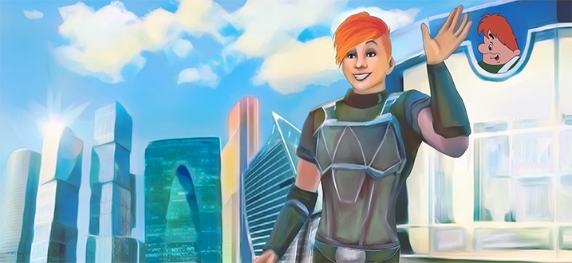

Войдите чтобы воспользоваться всеми преимуществами портала Ньюкленд
ВойтиЕще нет аккаунта?
ЗарегистрируйтесьЗарегистрируйтесь чтобы воспользоваться всеми преимуществами портала Ньюкленд
РегистрацияУже есть аккаунт?
ВойдитеЗдесь вы можете прочитать приключенческую историю Ньюка
Глава 1. Явление Майские сине-черные тучи грозили Москве проливным дождем. Малыш уселся на подоконник и наблюдал за молниями в небе.– Красота какая!Малыш совсем не боялся, даже чуточку. Во-первых, сверкало и громыхало далеко. Во-вторых, папа рассказывал, что в каждом доме и вообще, высоком сооружении есть громоотвод. Это такой штырь и провод, нижний конец которого закапывают в землю. Называется «заземление».Однажды в грозу Малыш решил устроить охоту на молнию. Крутился под дождем – ждал, пока люди попрячутся. Вот тогда можно будет откапывать! Вытащить этот конец и под провод что-нибудь подставить. Молния попадет в верхний конец на крыше, промчится по железному пруту в пластиковой трубке и – бабах! Прямо в жестяную банку с водой! Вода закипит, пар трубой, дым коромыслом… Бабушка так говорит. Что такое коромысло, Малыш еще не знает, а у бабушки стыдно спрашивать. «Ишь, – скажет, – молодой ишшо!».– Ну, и что тебе от громоотвода надо? – скрипучий голос над головой так напугал Малыша, что он подпрыгнул, как лягушонок.Пришлось выкручиваться:– Дождик собираю… – не рассказывать же о молнии, которую собирался поймать!– Ну-ка, брысь домой! – снова проскрипел голос. Его владелец – дворник дядя Вася – гонял мальчишек даже с детской площадки. Ну, конечно, когда они там куролесили.Так прошлой весной и не повезло с охотой на молнию. Малыш мечтательно смотрел в далекие – Ребенок! – мама вошла и кинулась к окну, испугавшись за Малыша. – Ну, что же ты! Там же гроза! Нельзя! А вдруг молния ударит?– Не ударит, она красивая! Почти как ты!– Не подлизывайся! Марш в кровать!Малыш, пока разговаривал с мамой, забыл о светящейся точке. Как только мама вышла, притворив дверь, выскользнул из постели и снова кинулся к окну. Надо же было рассмотреть, что это там по небу рассекает! Расплющил нос о стекло и сразу отскочил: на него уставился взглядом странный тип. Странный, потому что висел в воздухе по ту сторону окна и хитренько так ухмылялся.– Ты кто? – Малышу стало интересно. После дяди Васи можно было уже никого не опасаться. Открыл окно и впустил незнакомца. Тот влетел на какой-то необычной доске – скейте. Но скейт выглядел волшебно: ряд фонариков по краям, а на панелях…Впереди на панели – экран и клавиатура, как у компьютера. А сзади ввинчены трубки, из которых сверкают искры. Малыш разглядывал роскошную игрушку и на минуту забыл о пришельце. Хотя правильно сказать: «Прилетельце», – он же прилетел!– Ты кто? – снова спросил Малыш, рассматривая незнакомца. Выглядел пришелец очень спортивно – мускулы, трицепсы и бицепсы так и играли под тонким комбинезоном. А ткань, казалось, прилипла к телу и выглядела цветной яркой кожей, разрисованной спиральками и стрелами, похожими на молнии.
Глава 2. “Охота” Майские сине-черные тучи грозили Москве проливным дождем. Малыш уселся на подоконник и наблюдал за молниями в небе.– Красота какая!Малыш совсем не боялся, даже чуточку. Во-первых, сверкало и громыхало далеко. Во-вторых, папа рассказывал, что в каждом доме и вообще, высоком сооружении есть громоотвод. Это такой штырь и провод, нижний конец которого закапывают в землю. Называется «заземление».Однажды в грозу Малыш решил устроить охоту на молнию. Крутился под дождем – ждал, пока люди попрячутся. Вот тогда можно будет откапывать! Вытащить этот конец и под провод что-нибудь подставить. Молния попадет в верхний конец на крыше, промчится по железному пруту в пластиковой трубке и – бабах! Прямо в жестяную банку с водой! Вода закипит, пар трубой, дым коромыслом… Бабушка так говорит. Что такое коромысло, Малыш еще не знает, а у бабушки стыдно спрашивать. «Ишь, – скажет, – молодой ишшо!».– Ну, и что тебе от громоотвода надо? – скрипучий голос над головой так напугал Малыша, что он подпрыгнул, как лягушонок.Пришлось выкручиваться:– Дождик собираю… – не рассказывать же о молнии, которую собирался поймать!– Ну-ка, брысь домой! – снова проскрипел голос. Его владелец – дворник дядя Вася – гонял мальчишек даже с детской площадки. Ну, конечно, когда они там куролесили.Так прошлой весной и не повезло с охотой на молнию. Малыш мечтательно смотрел в далекие – Ребенок! – мама вошла и кинулась к окну, испугавшись за Малыша. – Ну, что же ты! Там же гроза! Нельзя! А вдруг молния ударит?– Не ударит, она красивая! Почти как ты!– Не подлизывайся! Марш в кровать!Малыш, пока разговаривал с мамой, забыл о светящейся точке. Как только мама вышла, притворив дверь, выскользнул из постели и снова кинулся к окну. Надо же было рассмотреть, что это там по небу рассекает! Расплющил нос о стекло и сразу отскочил: на него уставился взглядом странный тип. Странный, потому что висел в воздухе по ту сторону окна и хитренько так ухмылялся.– Ты кто? – Малышу стало интересно. После дяди Васи можно было уже никого не опасаться. Открыл окно и впустил незнакомца. Тот влетел на какой-то необычной доске – скейте. Но скейт выглядел волшебно: ряд фонариков по краям, а на панелях…Впереди на панели – экран и клавиатура, как у компьютера. А сзади ввинчены трубки, из которых сверкают искры. Малыш разглядывал роскошную игрушку и на минуту забыл о пришельце. Хотя правильно сказать: «Прилетельце», – он же прилетел!– Ты кто? – снова спросил Малыш, рассматривая незнакомца. Выглядел пришелец очень спортивно – мускулы, трицепсы и бицепсы так и играли под тонким комбинезоном. А ткань, казалось, прилипла к телу и выглядела цветной яркой кожей, разрисованной спиральками и стрелами, похожими на молнии.
Глава 3. “Путешествие на край света” Майские сине-черные тучи грозили Москве проливным дождем. Малыш уселся на подоконник и наблюдал за молниями в небе.– Красота какая!Малыш совсем не боялся, даже чуточку. Во-первых, сверкало и громыхало далеко. Во-вторых, папа рассказывал, что в каждом доме и вообще, высоком сооружении есть громоотвод. Это такой штырь и провод, нижний конец которого закапывают в землю. Называется «заземление».Однажды в грозу Малыш решил устроить охоту на молнию. Крутился под дождем – ждал, пока люди попрячутся. Вот тогда можно будет откапывать! Вытащить этот конец и под провод что-нибудь подставить. Молния попадет в верхний конец на крыше, промчится по железному пруту в пластиковой трубке и – бабах! Прямо в жестяную банку с водой! Вода закипит, пар трубой, дым коромыслом… Бабушка так говорит. Что такое коромысло, Малыш еще не знает, а у бабушки стыдно спрашивать. «Ишь, – скажет, – молодой ишшо!».– Ну, и что тебе от громоотвода надо? – скрипучий голос над головой так напугал Малыша, что он подпрыгнул, как лягушонок.Пришлось выкручиваться:– Дождик собираю… – не рассказывать же о молнии, которую собирался поймать!– Ну-ка, брысь домой! – снова проскрипел голос. Его владелец – дворник дядя Вася – гонял мальчишек даже с детской площадки. Ну, конечно, когда они там куролесили.Так прошлой весной и не повезло с охотой на молнию. Малыш мечтательно смотрел в далекие – Ребенок! – мама вошла и кинулась к окну, испугавшись за Малыша. – Ну, что же ты! Там же гроза! Нельзя! А вдруг молния ударит?– Не ударит, она красивая! Почти как ты!– Не подлизывайся! Марш в кровать!Малыш, пока разговаривал с мамой, забыл о светящейся точке. Как только мама вышла, притворив дверь, выскользнул из постели и снова кинулся к окну. Надо же было рассмотреть, что это там по небу рассекает! Расплющил нос о стекло и сразу отскочил: на него уставился взглядом странный тип. Странный, потому что висел в воздухе по ту сторону окна и хитренько так ухмылялся.– Ты кто? – Малышу стало интересно. После дяди Васи можно было уже никого не опасаться. Открыл окно и впустил незнакомца. Тот влетел на какой-то необычной доске – скейте. Но скейт выглядел волшебно: ряд фонариков по краям, а на панелях…Впереди на панели – экран и клавиатура, как у компьютера. А сзади ввинчены трубки, из которых сверкают искры. Малыш разглядывал роскошную игрушку и на минуту забыл о пришельце. Хотя правильно сказать: «Прилетельце», – он же прилетел!– Ты кто? – снова спросил Малыш, рассматривая незнакомца. Выглядел пришелец очень спортивно – мускулы, трицепсы и бицепсы так и играли под тонким комбинезоном. А ткань, казалось, прилипла к телу и выглядела цветной яркой кожей, разрисованной спиральками и стрелами, похожими на молнии.
Глава 4. “Таинственный чердак” Майские сине-черные тучи грозили Москве проливным дождем. Малыш уселся на подоконник и наблюдал за молниями в небе.– Красота какая!Малыш совсем не боялся, даже чуточку. Во-первых, сверкало и громыхало далеко. Во-вторых, папа рассказывал, что в каждом доме и вообще, высоком сооружении есть громоотвод. Это такой штырь и провод, нижний конец которого закапывают в землю. Называется «заземление».Однажды в грозу Малыш решил устроить охоту на молнию. Крутился под дождем – ждал, пока люди попрячутся. Вот тогда можно будет откапывать! Вытащить этот конец и под провод что-нибудь подставить. Молния попадет в верхний конец на крыше, промчится по железному пруту в пластиковой трубке и – бабах! Прямо в жестяную банку с водой! Вода закипит, пар трубой, дым коромыслом… Бабушка так говорит. Что такое коромысло, Малыш еще не знает, а у бабушки стыдно спрашивать. «Ишь, – скажет, – молодой ишшо!».– Ну, и что тебе от громоотвода надо? – скрипучий голос над головой так напугал Малыша, что он подпрыгнул, как лягушонок.Пришлось выкручиваться:– Дождик собираю… – не рассказывать же о молнии, которую собирался поймать!– Ну-ка, брысь домой! – снова проскрипел голос. Его владелец – дворник дядя Вася – гонял мальчишек даже с детской площадки. Ну, конечно, когда они там куролесили.Так прошлой весной и не повезло с охотой на молнию. Малыш мечтательно смотрел в далекие – Ребенок! – мама вошла и кинулась к окну, испугавшись за Малыша. – Ну, что же ты! Там же гроза! Нельзя! А вдруг молния ударит?– Не ударит, она красивая! Почти как ты!– Не подлизывайся! Марш в кровать!Малыш, пока разговаривал с мамой, забыл о светящейся точке. Как только мама вышла, притворив дверь, выскользнул из постели и снова кинулся к окну. Надо же было рассмотреть, что это там по небу рассекает! Расплющил нос о стекло и сразу отскочил: на него уставился взглядом странный тип. Странный, потому что висел в воздухе по ту сторону окна и хитренько так ухмылялся.– Ты кто? – Малышу стало интересно. После дяди Васи можно было уже никого не опасаться. Открыл окно и впустил незнакомца. Тот влетел на какой-то необычной доске – скейте. Но скейт выглядел волшебно: ряд фонариков по краям, а на панелях…Впереди на панели – экран и клавиатура, как у компьютера. А сзади ввинчены трубки, из которых сверкают искры. Малыш разглядывал роскошную игрушку и на минуту забыл о пришельце. Хотя правильно сказать: «Прилетельце», – он же прилетел!– Ты кто? – снова спросил Малыш, рассматривая незнакомца. Выглядел пришелец очень спортивно – мускулы, трицепсы и бицепсы так и играли под тонким комбинезоном. А ткань, казалось, прилипла к телу и выглядела цветной яркой кожей, разрисованной спиральками и стрелами, похожими на молнии.